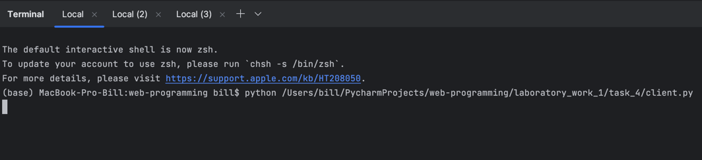
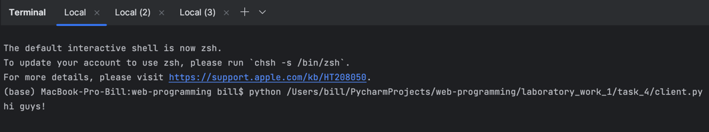
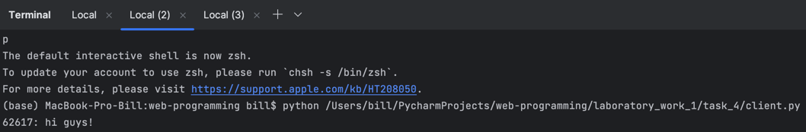
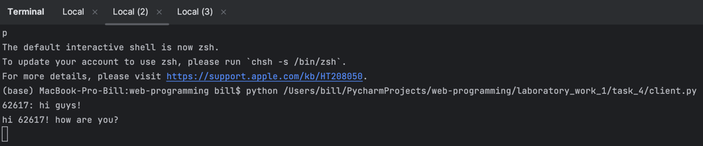
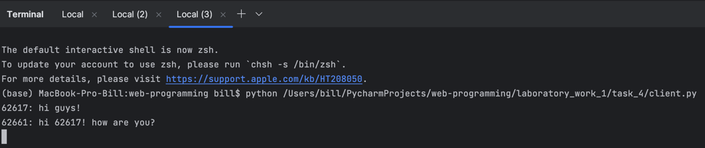

Задание 4
Реализовать многопользовательский чат.
Использовать библиотеки socket, threading.
Использовать протокол TCP.
Выполнение
Серверная часть
import socket
import threading
clients = []
lock = threading.Lock()
def send_message(client, addr):
while True:
data = client.recv(16384).decode("utf-8")
if not data:
break
with lock:
for c in clients:
if c != client:
c.send(f"{addr[1]}: {data}".encode("utf-8"))
conn = socket.socket(socket.AF_INET, socket.SOCK_STREAM)
conn.setsockopt(socket.SOL_SOCKET, socket.SO_REUSEADDR, 1)
conn.bind(("127.0.0.1", 8000))
conn.listen(5)
while True:
try:
client, addr = conn.accept()
with lock:
clients.append(client)
threading.Thread(target=send_message, args=(client, addr)).start()
except KeyboardInterrupt:
conn.close()
break
Программа создает сокет, привязывает его к адресу 127.0.0.1:8000 и начинает прослушивание (максимум 5 подключений).
При подключении нового клиента создается новый поток, который будет принимать сообщения от клиента и отправлять их всем
остальным клиентам. С помощью блокировки lock реализована синхронизация доступа к списку клиентов clients.
Ником пользователя является номер порта, с которого он подключился. Таким образом, сервер отправляет сообщения формата
<ник>: <сообщение>.
Клиентская часть
import socket
import threading
def receive_message(client):
while True:
message = client.recv(16384).decode("utf-8")
print(message)
conn = socket.socket(socket.AF_INET, socket.SOCK_STREAM)
conn.connect(("127.0.0.1", 8000))
receive_thread = threading.Thread(target=receive_message, args=(conn,))
receive_thread.start()
while True:
try:
message = input()
conn.send(message.encode("utf-8"))
except KeyboardInterrupt:
conn.close()
break
Программа создает сокет и подключается к серверу. Затем создается поток, который будет принимать сообщения от сервера. Пользователь вводит сообщения в консоль, которые отправляются на сервер, а остальные пользователи получают это сообщение.
Пример работы программы
Три пользователя подключаются к серверу:

Пользователь 1 отправляет сообщение:

Пользователи 2 и 3 получают сообщение:

Пользователь 2 отправляет сообщение:

Отображение предыдущих сообщений у пользователя 3:
